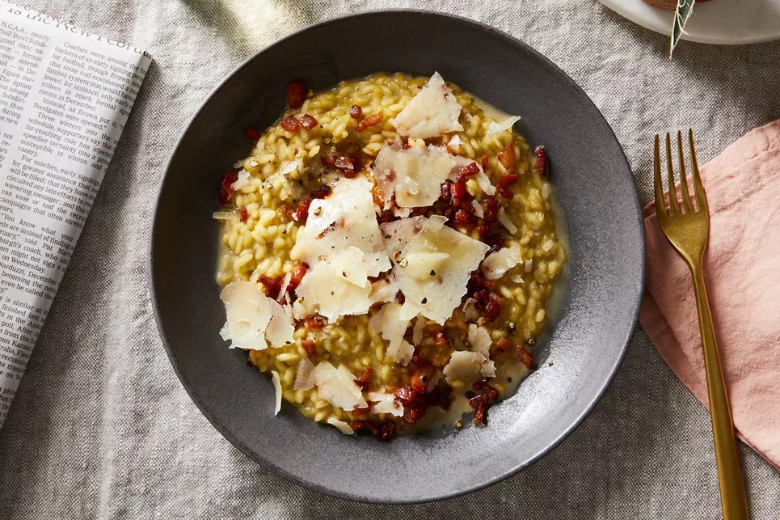

Risotto Carbo-MFA

Description
What is Risotto Carbonara?
Let’s break it down:
Risotto is a northern Italian rice dish cooked with broth until it reaches a creamy consistency.
Carbonara is traditionally a pasta dish made with egg yolks, hard cheese (such as Parmesan and/or Romano), cured pork, and freshly cracked black pepper.
Our Risotto Carbonara is a delicious marriage of the two – combining the same smoky flavors of a carbonara in creamy risotto instead of pasta.
Ingredients
- 1 tablespoon extra-virgin olive oil
- 4 ounces bacon, diced
- 4 ounces sliced Genoa salami, diced
- 3 cups chicken stock, homemade if possible
- 2 tablespoons butter
- 1 cup onions, diced
- 1 tablespoon garlic, minced
- Pinch red pepper flakes
- 1 cup Arborio rice
- ¼ cup white wine
- 2 egg yolks
- 2 tablespoons heavy cream
- ½ cup freshly grated Parmesan cheese
- ½ cup freshly grated Romano cheese
- 2 tablespoons Italian flat leaf parsley, chopped
- ½ teaspoon white pepper
- Salt as needed (depending on how salty your stock is)
Steps
- Before you begin, have all ingredients measured out. Risotto needs attention once you start cooking it.
- In a medium heavy bottomed pan or Dutch oven, over medium heat, add the olive oil and once hot, add the bacon.
- Cook the bacon five minutes until almost crisp. Remove with a slotted spoon and set aside.
- Add the salami and cook only 1-2 minutes to slightly crisp, being careful not to burn. Remove with a slotted spoon and add to the bacon.
- Pour the fat into a bowl and wipe the inside of the hot pan with a wad of paper towels to pick up and dark pieces or sediment.
- Heat the stock in a separate small sauce pan and keep hot.
- Return the Dutch oven to medium heat and measure in two tablespoons of the bacon fat along with the butter.
- Once the butter has melted, add the onions and cook three minutes.
- Add the garlic and red pepper flakes and cook one minute then add the rice and cook for two minutes.
- Add the wine and once the wine evaporates, reduce the heat to medium low and start adding hot chicken stock one half cup at a time, making sure that each addition gets absorbed in before adding more.
- After about 15-20 minutes, all of the stock should be in and absorbed. Cover the pot and remove from heat and let sit five minutes.
- While the rice sits, in a medium bowl, beat the egg yolks and heavy cream.
- After the rice sat for five minutes, scoop out spoonfuls of the rice and whisk into the cream and egg mixture to temper the eggs. After adding a cup or so, stir this mixture back into the rice pot.
- Off heat add in the reserved cooked bacon and salami, the Parmesan and Romano cheese, the chopped Italian parsley and the white pepper.
- Taste and add only enough salt to season the rice. The bacon and salami are salty and your stock may be salty, so you may not need any additional salt.
- Stir and serve and if it gets too thick, loosen with additional stock or water.